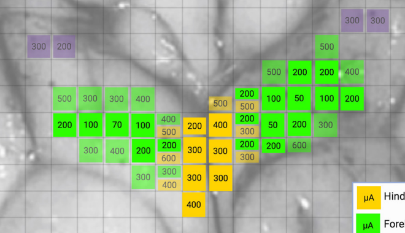
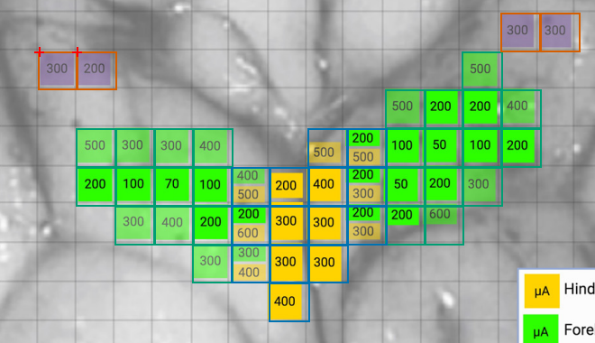
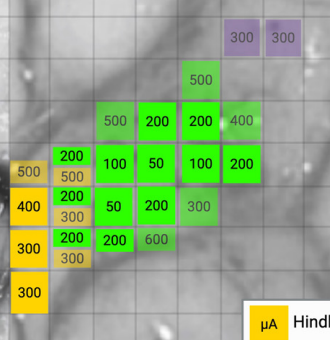
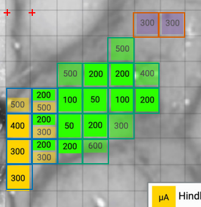

Source image, saved anatomical outlines and scale endpoints. Unfinished fields are NA.
Provisional digitization; inspect anatomical boundaries.


| Field | mm² | % neocortex | Status |
|---|---|---|---|
| forelimb_sampled_grid | 32.118 | NA | provisional; anatomical review required |
| hindlimb_sampled_grid | 14.055 | NA | provisional; anatomical review required |
| face_sampled_grid | 4.032 | NA | provisional; anatomical review required |
| M1_complete | NA | NA | not_measurable |
| hindlimb_intrinsic_surface | NA | NA | not_measurable |
Provisional digitization; inspect anatomical boundaries.


| Field | mm² | % neocortex | Status |
|---|---|---|---|
| forelimb_sampled_grid | 17.057 | NA | provisional; anatomical review required |
| hindlimb_sampled_grid | 7.039 | NA | provisional; anatomical review required |
| face_sampled_grid | 2.014 | NA | provisional; anatomical review required |
| M1_complete | NA | NA | not_measurable |
| intrinsic_medial_wall_area | NA | NA | not_measurable |